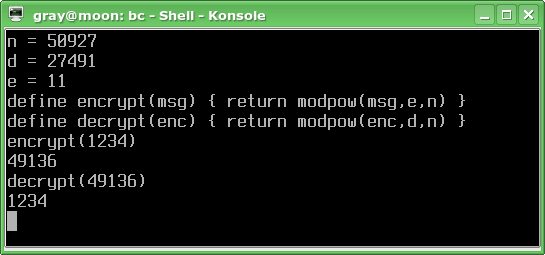

Не забыли, какое у нас есть ценное соотношение?
- A = Be mod n
- B = Ad mod n
Здесь есть одна трудность — посчитать xe mod n за приемлимое время. Может быть, нам подойдёт такая вот функция?
Наш открытый ключ — (50927, 11). Если мы захотим зашифровать сообщение «1234» (сообщение — это число), то нам потребуется посчитать значение 123411 mod 50927. Если будем считать «в лоб», то сначала надо будет определить значение 123411 — а это 10103381606301936187653160695875584. Это всего лишь 11-я степень, а в настоящей криптографии e и d — числа с десятками знаков.
К счастью, есть алгоритм побыстрее, и он в RSA играет довольно важную роль.
Вот теперь — другое дело. Поехали!

Получилось! При помощи открытого ключа наше число (1234) превращается в шифр (49136), которое, в свою очередь, при помощи закрытого ключа превращается обратно в 1234. Теперь попробуем разобраться с электронной подписью.